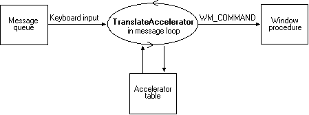

title: About Keyboard Accelerators description: This topic discusses keyboard accelerators. ms.assetid: cbf7619d-289d-40c9-9a06-6ce47026d43f keywords:
Accelerators are closely related to menus — both provide the user with access to an application's command set. Typically, users rely on an application's menus to learn the command set and then switch over to using accelerators as they become more proficient with the application. Accelerators provide faster, more direct access to commands than menus do. At a minimum, an application should provide accelerators for the more commonly used commands. Although accelerators typically generate commands that exist as menu items, they can also generate commands that have no equivalent menu items.
This section covers the following topics.
An accelerator table consists of an array of ACCEL structures, each defining an individual accelerator. Each ACCEL structure includes the following information:
To process accelerator keystrokes for a specified thread, the developer must call the TranslateAccelerator function in the message loop associated with the thread's message queue. The TranslateAccelerator function monitors keyboard input to the message queue, checking for key combinations that match an entry in the accelerator table. When TranslateAccelerator finds a match, it translates the keyboard input (that is, the WM_KEYUP and WM_KEYDOWN messages) into a WM_COMMAND or WM_SYSCOMMAND message and then sends the message to the window procedure of the specified window. The following illustration shows how accelerators are processed.

The WM_COMMAND message includes the identifier of the accelerator that caused TranslateAccelerator to generate the message. The window procedure examines the identifier to determine the source of the message and then processes the message accordingly.
Accelerator tables exist at two different levels. The system maintains a single, system-wide accelerator table that applies to all applications. An application cannot modify the system accelerator table. For a description of the accelerators provided by the system accelerator table, see Accelerator Keystroke Assignments.
The system also maintains accelerator tables for each application. An application can define any number of accelerator tables for use with its own windows. A unique 32-bit handle (HACCEL) identifies each table. However, only one accelerator table can be active at a time for a specified thread. The handle to the accelerator table passed to the TranslateAccelerator function determines which accelerator table is active for a thread. The active accelerator table can be changed at any time by passing a different accelerator-table handle to TranslateAccelerator.
Several steps are required to create an accelerator table for an application. First, a resource compiler is used to create accelerator-table resources and to add them to the application's executable file. At run time, the LoadAccelerators function is used to load the accelerator table into memory and retrieve the handle to the accelerator table. This handle is passed to the TranslateAccelerator function to activate the accelerator table.
An accelerator table can also be created for an application at run time by passing an array of ACCEL structures to the CreateAcceleratorTable function. This method supports user-defined accelerators in the application. Like the LoadAccelerators function, CreateAcceleratorTable returns an accelerator-table handle that can be passed to TranslateAccelerator to activate the accelerator table.
The system automatically destroys accelerator tables loaded by LoadAccelerators or created by CreateAcceleratorTable. However, an application can free resources while it is running by destroying accelerator tables no longer needed by calling the DestroyAcceleratorTable function.
An existing accelerator table can be copied and modified. The existing accelerator table is copied by using the CopyAcceleratorTable function. After the copy is modified, a handle to the new accelerator table is retrieved by calling CreateAcceleratorTable. Finally, the handle is passed to TranslateAccelerator to activate the new table.
An ASCII character code or a virtual-key code can be used to define the accelerator. An ASCII character code makes the accelerator case sensitive. Thus, using the ASCII "C" character defines the accelerator as ALT+C rather than ALT+c. However, case-sensitive accelerators can be confusing to use. For example, the ALT+C accelerator will be generated if the CAPS LOCK key is down or if the SHIFT key is down, but not if both are down.
Typically, accelerators don't need to be case sensitive, so most applications use virtual-key codes for accelerators rather than ASCII character codes.
Avoid accelerators that conflict with an application's menu mnemonics, because the accelerator overrides the mnemonic, which can confuse the user. For more information about menu mnemonics, see Menus.
If an application defines an accelerator that is also defined in the system accelerator table, the application-defined accelerator overrides the system accelerator, but only within the context of the application. Avoid this practice, however, because it prevents the system accelerator from performing its standard role in the user interface. The system-wide accelerators are described in the following list:
| Accelerator | Description |
|---|---|
| ALT+ESC | Switches to the next application. |
| ALT+F4 | Closes an application or a window. |
| ALT+HYPHEN | Opens the Window menu for a document window. |
| ALT+PRINT SCREEN | Copies an image in the active window onto the clipboard. |
| ALT+SPACEBAR | Opens the Window menu for the application's main window. |
| ALT+TAB | Switches to the next application. |
| CTRL+ESC | Switches to the Start menu. |
| CTRL+F4 | Closes the active group or document window. |
| F1 | Starts the application's help file, if one exists. |
| PRINT SCREEN | Copies an image on the screen onto the clipboard. |
| SHIFT+ALT+TAB | Switches to the previous application. The user must press and hold down ALT+SHIFT while pressing TAB. |
Â
Using an accelerator is the same as choosing a menu item: Both actions cause the system to send a WM_COMMAND or WM_SYSCOMMAND message to the corresponding window procedure. The WM_COMMAND message includes an identifier that the window procedure examines to determine the source of the message. If an accelerator generated the WM_COMMAND message, the identifier is that of the accelerator. Similarly, if a menu item generated the WM_COMMAND message, the identifier is that of the menu item. Because an accelerator provides a shortcut for choosing a command from a menu, an application usually assigns the same identifier to the accelerator and the corresponding menu item.
An application processes an accelerator WM_COMMAND message in exactly the same way as the corresponding menu item WM_COMMAND message. However, the WM_COMMAND message contains a flag that specifies whether the message originated from an accelerator or a menu item, in case accelerators must be processed differently from their corresponding menu items. The WM_SYSCOMMAND message does not contain this flag.
The identifier determines whether an accelerator generates a WM_COMMAND or WM_SYSCOMMAND message. If the identifier has the same value as a menu item in the System menu, the accelerator generates a WM_SYSCOMMAND message. Otherwise, the accelerator generates a WM_COMMAND message.
If an accelerator has the same identifier as a menu item and the menu item is grayed or disabled, the accelerator is disabled and does not generate a WM_COMMAND or WM_SYSCOMMAND message. Also, an accelerator does not generate a command message if the corresponding window is minimized.
When the user uses an accelerator that corresponds to a menu item, the window procedure receives the WM_INITMENU and WM_INITMENUPOPUP messages as though the user had selected the menu item. For information about how to process these messages, see Menus.
An accelerator that corresponds to a menu item should be included in the text of the menu item.
Windows enables applications to hide or show various features in its UI. These settings are known as the UI state. The UI state includes the following settings:
A window can send messages to request a change in the UI state, can query the UI state, or enforce a certain state for its child windows. These messages are as follows.
| Message | Description |
|---|---|
| WM_CHANGEUISTATE | Indicates that the UI state should change. |
| WM_QUERYUISTATE | Retrieves the UI state for a window. |
| WM_UPDATEUISTATE | Changes the UI state. |
Â
By default, all child windows of a top-level window are created with the same UI state as their parent.
The system handles the UI state for controls in dialog boxes. At dialog box creation, the system initializes the UI state accordingly. All child controls inherit this state. After the dialog box is created, the system monitors the user's keystrokes. If the UI state settings are hidden and the user navigates using the keyboard, the system updates the UI state. For example, if the user presses the Tab key to move the focus to the next control, the system calls WM_CHANGEUISTATE to make the focus indicators visible. If the user presses the Alt key, the system calls WM_CHANGEUISTATE to make the keyboard accelerators visible.
If a control supports navigation between the UI elements it contains, it can update its own UI state. The control can call WM_QUERYUISTATE to retrieve and cache the initial UI state. Whenever the control receives an WM_UPDATEUISTATE message, it can update its UI state and send a WM_CHANGEUISTATE message to its parent. Each window will continue to send the message to its parent until it reaches the top-level window. The top-level window sends the WM_UPDATEUISTATE message to the windows in the window tree. If a window does not pass on the WM_CHANGEUISTATE message, it will not reach the top-level window and the UI state will not be updated.
Â
Â